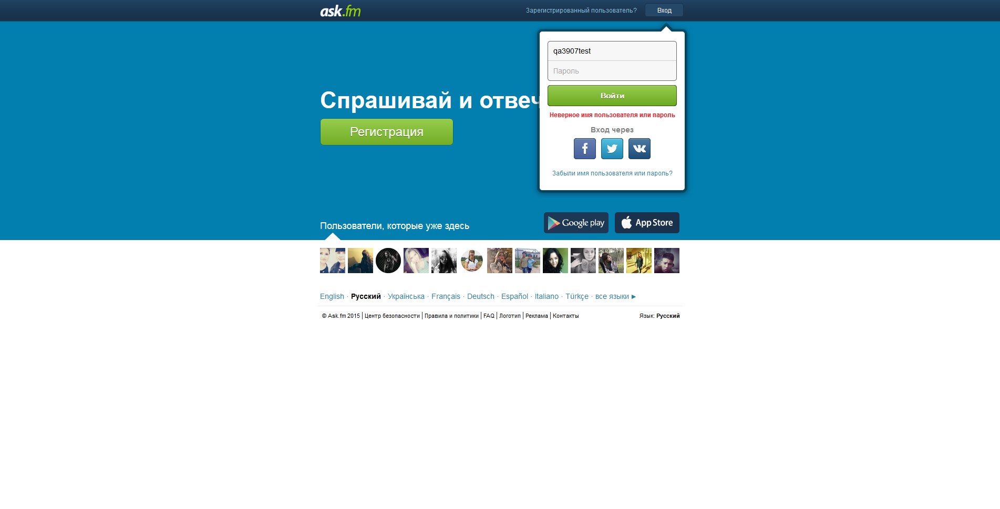

[10:21:10:780]:
* Starting test class com.askfm.tests.LoginTest
[10:21:16:870]: Open Ask.fm
[10:21:29:104]: Click on login box button
[10:21:29:632]: Type login
[10:21:29:773]: Type password
[10:21:30:443]: Click on login button
[10:21:45:646]: Screenshot saved:

[10:21:46:009]: Open Ask.fm
[10:21:46:745]: Click on login box button
[10:21:46:956]: Type login
[10:21:47:128]: Type password
[10:21:47:287]: Click on login button
[10:21:48:750]: * Stopping WebDriver
[10:21:48:951]:
* Starting test class com.askfm.tests.SendQuestonTest
[10:21:54:060]: Open Ask.fm
[10:22:01:613]: Click on login box button
[10:22:01:954]: Type login
[10:22:02:096]: Type password
[10:22:02:639]: Click on login button
[10:22:03:840]: Get the number of questions
[10:22:03:929]: Click on Logout button
[10:22:05:130]: Open Ask.fm
[10:22:05:993]: Click on login box button
[10:22:06:210]: Type login
[10:22:06:395]: Type password
[10:22:06:546]: Click on login button
[10:22:08:440]: Open friend's form
[10:22:09:242]: Type question
[10:22:09:481]: Click on Ask button
[10:22:10:350]: Click on Logout button
[10:22:11:522]: Open Ask.fm
[10:22:12:240]: Click on login box button
[10:22:12:492]: Type login
[10:22:12:674]: Type password
[10:22:12:899]: Click on login button
[10:22:14:309]: Get the number of questions
[10:22:14:412]: Click on Logout button
[10:22:15:422]: * Stopping WebDriver
{kind=link}